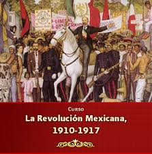

"Revolucion Mexicana"
Introduccion
La Revolución empezó el 20 de Noviembre de 1910. Don Francisco I. Madero en 1909 promovió el Partido Antireeleccionista e inició el movimiento armado ese día pugnando por el ¨Sufragio Efectivo no Reelección¨ y murió por la causa de la Revolución en el episodio conocido como la ¨Decena Trágica¨. Pancho Villa tomó a su mando la división del Norte. Emiliano Zapata luchó por la justicia agraria. Venustiano Carranza, se levantó contra el gobierno de Victoriano Huerta y de esa lucha se produjo la Constitución Federal del 5 de Febrero de 1917 que todavía rige a los ciudadanos mexicanos.


18 de Noviembre de 1910
La Revolución Mexicana inició el 20 de noviembre de 1910, pero la historia oficial inicia en Puebla, dos días antes, con los hermanos Serdán Aquiles Serdán, el menor de tres hermanos, fue uno de los hombres con espíritu antirreeleccionista que apoyó, desde el inicio, a Francisco I. Madero; en Puebla, Serdán fundó el club político Durante los siguientes meses Aquiles Serdán fue capturado y enviado, con frecuencia, a prisión. Su trabajo con Francisco I. Madero permitió la fundación del Partido Antirreeleccionista Local Serdán viajó a la ciudad de México por armamento, el que adquirió de Arsenio Combaluzier, amigo y compadre de Porfirio Díaz. Es en la ciudad de Puebla donde Aquiles Serdán fue comisionado para levantarse en armas el 20 de noviembre de 1910, pero el 17 de ese mes el gobernador fue alertado del levantamiento de Madero, y después de un cateo en el que el nombre de Serdán aparecía como el propietario de las armas, el gobernador envió a la policía para registrar todo el lugar El 18 de noviembre, con armas en mano, después de haber sido alertado del posible cateo, Aquiles Serdán reunió a sus compañeros ya preparados para iniciar la Revolución Mexicana.Carmen Serdán, hermana mayor de Aquiles, fue de las pocas sobrevivientes de ese conflicto; ella subió armada al techo de su casa para incitar a los vecinos a unirse a la lucha, fue herida por una bala y, después del enfrentamiento, encarcelada junto con su madre en la cárcel de la Merced.
Revolucion Mexicana
Personajes de la Revolucion Mexicana
Revolucion Mexicana
Causas que Originaron el Movimiento
- Causas de Orden Politico.
El envejecimiento del sistema, manifestado en la prolongada permanencia de Díaz en el poder, así como en la inmovilidad del gabinete porfirista La influencia de diversas corrientes ideológicas opuestas al gobierno porfirista; sobre todo el anarquismo, manifiesto en el movimiento magonista a través del Programa del Partido Liberal, publicado en 1906, el cual proponía cambios políticos y reivindicaciones para los trabajadores.
- Causas Economicas.
- Inconformidad de los pequeños empresarios dedicados a labores comerciales, agrícolas e industriales, la inconformidad de la clase media emprendedora, eran los efectos que la tienda de raya tenía en el desarrollo del capitalismo, pues al limitar el intercambio dinero–mercancías, dificultaba el crecimiento del mercado interno.
- Causas Sociales.
El descontento de los campesinos causado por el despojo de tierras, que de manera sistemática se venía dando desde 1883, en que se empezó a aplicarse la ley de deslinde y colonización de tierras baldías, y aunque su aplicación fue suspendida en 1808.La sobreexplotación del trabajo asalariado en minas, fábricas y haciendas, causante de numerosas huelgas, en los últimos años de la dictadura porfirista, que preparaba los ánimos para una revuelta de alcances mayores.
El descontento en el sector laboral causado por la política discriminatoria aplicada contra los trabajadores mexicanos, quienes recibían un salario menor que los empleados extranjeros dedicados a las mismas labores.
Revolucion Mexicana
Emiliano Zapata
(San Miguel Anenecuilco, México, 1879 - Morelos, 1919) Revolucionario agrarista mexicano. Hijo de una humilde familia campesina, Emiliano Zapata trabajó como peón y aparcero y recibió una pobre instrucción escolar La persecución desatada contra la Junta por el régimen porfirista lo llevó a Cuernavaca y luego a México como caballerizo del ejército.
De regreso en Morelos, Emiliano Zapata retomó la defensa de las tierras comunales y, en 1909, fue designado jefe de la Junta de Ayala. Al frente de un pequeño grupo armado, ocupó las tierras del Hospital y las distribuyó entre los campesinos.Sin embargo, la guerra proseguía; en 1917, las tropas de Carranza derrotaron de nuevo a Villa en el norte. Ante la amenaza que Zapata suponía para el gobierno federal, el coronel Jesús Guajardo, que dirigía las operaciones gubernamentales contra él, traicionó y asesinó al líder agrarista tras atraerlo a un encuentro secreto en la hacienda de Chinameca, en Morelos.
Revolucion Mexicana
Francisco Villa
(Doroteo Arango Arámbula) Revolucionario mexicano (San Juan del Río, Durango, 1876 - Parral, Chihuahua, 1923). Campesino pobre, huérfano y con escasa formación, cuando estalló la Revolución de 1910 llevaba varios años fugitivo en las montañas por haber asesinado a uno de los propietarios de la hacienda donde trabajaba.En 1912 fue encarcelado, al sospechar el general Victoriano Huerta que estaba implicado en la rebelión de Orozco en defensa de las aspiraciones sociales del campesinado, que Madero había postergado. Consiguió escapar a los Estados Unidos y, tras el asesinato de Madero, regresó a México y formó un nuevo ejército revolucionario, la División del Norte (1913).Al caer Carranza en 1920, el nuevo presidente Adolfo de la Huerta le ofreció una amnistía y un rancho en Parral (Chihuahua), a cambio de cesar sus actividades y retirarse de la política. Villa aceptó, pero murió tres años después, asesinado en Parral por motivos políticos, durante la presidencia de Obregón.

Revolucion Mexicana
Francisco I. Madero
Francisco Ignacio Madero González nació el 30 de octubre de 1873, en Coahuila (México). Sus padres fueron el Francisco Madero Hernández y Mercedes González Treviño. Estudió agricultura en Estados Unidos y administración en Francia.
Desde 1905 fue opositor a la dictadura de Porfirio Díaz. En 1909 fundó el Partido Nacional Antirreeleccionista y lanzó su candidatura presidencial. En 1910, Porfirio Díaz lo mandó encarcelar, pero Madero logró escapar y lanzó el Plan de San Luis iniciando una "rebelión nacional". Poco después Porfirio Díaz renunció y huyó a Europa.
Francisco Madero tomó el poder y gobernó hasta febrero de 1913. En este periodo implantó el sufragio popular y prohibió la reelección presidencial. Pero los campesinos exigían reformas económicas, y se sublevaron con Emiliano Zapata y Pancho Villa. Mientras tanto los hacendados apoyaron a Victoriano Huerta, quien le dio un golpe de estado y ordenó su asesinato. Murió a balazos el 22 de febrero de 1913, en Ciudad de México.


Revolucion Mexicana
Porfirio Diaz
Porfirio Díaz Mori nació el 15 de setiembre de 1830, en Oaxaca, México. Sus padres fueron José Faustino Díaz y Petrona Mori. Estudió Leyes, pero se dedicó a la vida militar. Participó en la Guerra de la Reforma (1858-1860) y luchó contra la invasión francesa (1861-1867), contribuyendo a la victoria del presidente Benito Juárez.
En 1867 y 1871 fue candidato presidencial, pero en ambas ocasiones fue derrotado por Benito Juárez. Llegó a poder en 1877 y gobernó hasta 1880. De 1884 a 1911 gobernó dictatorialmente haciéndose reelegir sucesivamente. Favoreció la llegada de capitales extranjeros en la minería y la industria. Mientras tanto, la mayoría de mexicanos vivía en pobreza.
En 1910 se reeligió después de encarcelar al candidato opositor Francisco Madero, quien al salir de prisión dio inicio a la Revolución Mexicana. El 25 de mayo de 1911 renunció y se exilió en París, donde murió el 2 de julio de 1915.
Revolucion Mexicana
Constitucion de 1917
El 5 de febrero de 1917 fue promulgada la Constitución Política de los Estados Unidos Mexicanos, por el presidente constitucionalista Venustiano Carranza, como producto de los movimientos revolucionarios de 1910. La Constitución Política de los Estados Unidos Mexicanos es la norma suprema de los Estados Unidos Mexicanos. Es el hacer político y legal para la organización y relación del gobierno federal con los Estados de México, los ciudadanos y todas las personas que viven o visitan el país. La actual Constitución es una aportación de la tradición jurídica mexicana al constitucionalismo universal, dado que fue la primera constitución de la historia en incluir muchos derechos sociales. Y era, por mucho, adelantada a todas las de esa época.
La Constitución Mexicana está dividida en 9 Títulos, que contienen 136 Artículos y 19 transitorios. El Primer Título y sus 38 artículos hablan acerca de los Derechos Humanos, las Garantías Individuales, y la ciudadanía mexicana, mientras que los siguientes 98 artículos definen la estructura del Estado Mexicano.
Revolucion Mexicana
Culminacion de la Revolucion
Culminación de la revolución armada con laConstitución Políticade los Estados Unidos Mexicanosde 1917, reconocida por haber sido una constituciónliberal social y la primera de su tipo en el mundo que aún rige al México de hoy. LaConstitución garantizó reformas y derechos liberales (civiles y políticas) y sociales(reforma agraria y legislación laboral progresista).El ideal de la revolución era crear una ciudadanía moderna con derechos y alfabetismo.La Constitución de 1917 fue, quizás, el logro más alto de la Revolución
Revolucion Mexicana
(Video)Revolucion Mexicana
Revolucion Mexicana